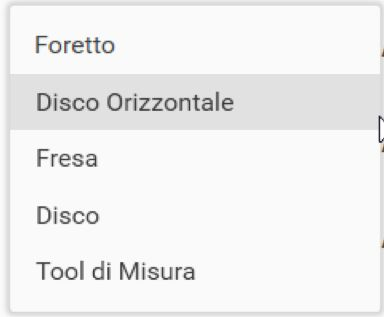

Tool properties
The following properties are defined for each tool:
Number | Represents the corrector and can be changed using the buttons. |
Name | Name assigned to the tool |
Tool type |  |
Extension type | Type of tool extension. An XML file representing the extension and used by Eureka is also associated with it. |
Position | Position within the tool magazine |
Length | Tool length |
Diameter | Tool diameter |
Rotational speed | Motor speed set for the tool in rpm |
Length correction | Tool-length correction value |
Mass | Tool mass |
Internal water | Switches on the tool’s internal water flow |
External blade water | Switches on the external water flow for the saw blade |
External milling-cutter water | Switches on the external water flow for the milling cutter |
External milling-cutter water 2 | Switches on the external water flow for the additional milling cutter |
Preset flag | Indicates whether the tool is to be probed |
Measurement Type | Indicates the type of measurement  |
Maximum current draw | Indicates the maximum current-draw percentage |
Operating hours | Indicates the tool’s operating hours. The counter can be reset using the button. |
Syn CADCAM | Indicates whether the tool is to be synchronised with CADCAM,  manual synchronisation, automatic synchronisation. |
Syn Eureka | Indicates whether the tool is to be synchronised with Eureka,  manual synchronisation,  automatic synchronisation. |